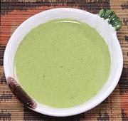

|
Cilantro Sauce with ChiliEast Africa, Somalia | ||||
| Makes: Effort: Sched: DoAhead: |
2 cups ** 20 min Yes |
This delicious sauce is very liquid, like a dip, and is great as a dip with crudités. Also use it as a sauce for eggs, chicken, fish, meat, rice, or whatever have you. | |||
|
----- 1/2 2 2 ----- 8 3 2 1 1 |
--- c cl --- oz T T t t |
-- Solids Cilantro (1) Serrano Chili (2) Garlic ------------- Coconut Milk (3) Lime Juice Wine Vinegar, white Sugar Salt |
Make - (20 min)
|